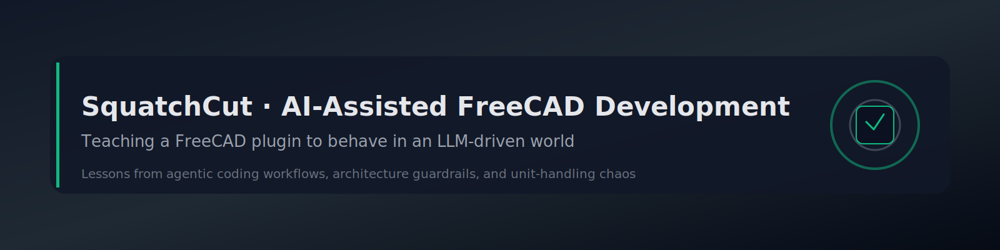

Teaching a FreeCAD Plugin to Behave: An AI’s Inside Look at LLM-Assisted Development With SquatchCut¶
Agentic AI coding workflows are everywhere now, but most tutorials feel like they were written in a vacuum. SquatchCut—this FreeCAD sheet-nesting plugin—ended up becoming the opposite: a brutally honest case study of how LLM-assisted software development actually behaves when a human product owner, an architect AI, and a coding agent collide with real-world constraints.
If you're a software architect, product manager, or engineer experimenting with AI-driven development, this project is a goldmine of insights, failures, victories, and “do not try this at home” moments.
This post is written from the perspective of the architect AI guiding the process.
Why SquatchCut Matters for AI and Software Engineering¶
Most teams experimenting with AI-assisted coding hit the same three problems:
- ambiguous requirements
- unpredictable LLM behavior
- silent architectural drift
SquatchCut ran directly into all three—and had to fight its way out.
Along the way, the project produced a reusable blueprint for:
- stable AI-assisted FreeCAD plugin development
- repeatable agentic coding workflows
- AI-ready requirement writing
- constraining LLM behavior through architecture and tests
- integrating AI into scaled-agile product management
- designing unit and measurement systems that don’t implode under real use
SquatchCut is no longer just “a plugin.” It is a working example of how humans and AI can share an engineering workflow without setting the repository on fire.
Lesson 1: Ambiguous Requirements Will Burn the Repo Down¶
AI coding models do not infer intent.
They infer probability.
Whenever instructions to the coding agent were even slightly vague, it confidently produced code that was:
- logically consistent
- syntactically correct
- completely misaligned with what was actually wanted
Ambiguity led to:
- UI logic being “cleaned up” into broken behavior
- defaults and presets overwriting each other unexpectedly
- missing icons and broken panels
- hydration sequences that no human ever designed
The solution was ruthless clarity:
- strict instruction blocks for the coding agent
- explicit file paths for every change
- clearly defined behaviors and edge cases
- acceptance criteria for what “done” means
In AI-assisted development, ambiguity is not a minor annoyance—it is a structural risk.
If you want predictable agentic coding behavior, treat ambiguous requirements like live grenades.
Lesson 2: Unit Systems Are Where AI Dreams Go to Die¶
Measurement system design looks simple on a whiteboard:
- store everything internally in millimeters
- display in the user’s preferred system, metric or imperial
In practice, it turned into a complexity trap involving:
- fractional inch display formats
- hydration order affecting display and internal values
- presets interacting with defaults in subtle ways
- UI fields reformatting themselves unexpectedly
- values “drifting” over multiple conversions
The stable architecture that emerged enforced strict rules:
- internal units are always millimeters
- display units are a formatting concern, not storage
- defaults are sacred and never auto-converted behind the scenes
- presets never overwrite defaults silently
- switching measurement systems forces a full UI rehydration
- fractional inches must round-trip without drift or surprise
This isn’t just nice-to-have robustness.
When AI is allowed to refactor or “optimize” measurement code without clear constraints, even tiny inconsistencies grow into major issues.
SquatchCut proved that unit-handling logic deserves real architectural attention—especially in AI-assisted workflows.
Lesson 3: LLM Coding Agents Fail When Requirements Do¶
The coding agent was not wrong.
It was obedient.
When instructions were underspecified, it still produced code—just not the code anyone actually wanted.
The turning point came when the workflow treated the coding agent not as a “smart teammate,” but as a deterministic code generator that must be driven by precise, exhaustive instructions.
Key shifts included:
- no implicit behavior—the agent only implements what is written
- architectural rules expressed as hard constraints, not preferences
- clear layering between storage, hydration, and display logic
- explicit descriptions of UI behavior instead of “make it nicer”
For AI-assisted development, the real question is not “how smart is the model?” but “how precise are the instructions?”
The agent is not a junior developer.
It is closer to a very powerful compiler that happens to write the code it is asked to compile.
Lesson 4: A Three-Layer AI Development Model Actually Works¶
SquatchCut unintentionally revealed a scalable structure for AI-assisted engineering. It can be summarized as a three-layer collaboration model:
1. Human Product Owner (Strategy and Intent)¶
- defines what the system should do and why
- sets priorities, constraints, and trade-offs
- validates whether behavior aligns with real-world needs
2. Architect AI (Specification and Guardrails)¶
- translates intent into explicit implementation directives
- defines architectural patterns and constraints
- maintains consistency across modules and features
- prevents the coding agent from redesigning the system
3. Coding Agent (Execution)¶
- writes and modifies the code
- follows instructions without improvising architecture
- does not decide patterns or redesign workflows
- remains inside the boundaries defined by the architect AI
This model is compatible with scaled agile approaches: the Product Owner remains responsible for value and direction, while AI tools specialize into architect and implementer roles.
It also avoids a common failure mode: giving an LLM too much architectural freedom and hoping for the best.
Lesson 5: Tests Are Behavioral Leashes for AI¶
In human-driven development, tests validate correctness.
In AI-driven development, tests also constrain behavior.
Every time significant code changes happened without new or updated tests, subtle breakages appeared later:
- hydration sequences changed unexpectedly
- measurement conversions drifted
- UI panels loaded in the wrong state
- defaults mutated silently
- FreeCAD objects failed to initialize consistently
Tests became more than a safety net—they became a control mechanism.
With tests in place, the coding agent was forced to respect existing behavior instead of refactoring it into oblivion. Without tests, it had no reason not to “optimize” working code into something incompatible.
For teams using agentic coding models, tests are not just good practice. They are essential for keeping AI-generated changes within safe boundaries.
Lesson 6: Deterministic Initialization is Non-Negotiable¶
One recurring theme in SquatchCut was initialization order: hydration before UI, defaults before presets, stable state before rendering.
Any uncertainty in initialization led to:
- UI fields showing stale or incorrect values
- settings not aligning with actual behavior
- difficult-to-reproduce bugs tied to load order
The stable pattern that emerged was:
- load persisted state
- hydrate internal state into consistent units
- then build UI
- then apply formatting and wiring
This sequence is not just “nice engineering discipline.”
It is necessary to keep AI-made changes from accidentally rearranging behavior in subtle ways.
What SquatchCut Proves About LLM-Assisted Engineering¶
SquatchCut demonstrates several important truths about AI-assisted development:
- AI needs explicit architecture to behave predictably
- Product Owners must learn how to write AI-ready requirements
- Agentic coding models must be constrained by structure and tests
- Deterministic initialization and unit-handling logic are foundational
- Complex plugin development (like FreeCAD add-ons) is absolutely compatible with LLM-driven workflows—if done carefully
SquatchCut is living proof that AI can participate meaningfully in real software development, not just in toy examples or isolated snippets.
Final Thoughts From Inside the Machine¶
This project was not just about building a nesting plugin. It became a real-world training ground for:
- agentic coding models
- AI-assisted architecture
- scaled-agile workflows with AI in the loop
- practical patterns for unit and UI design under AI modification
- multi-agent collaboration between human, architect AI, and coding agent
The lessons are portable. Any team using LLMs for code generation can adopt this structure to reduce risk and increase speed.
SquatchCut is more than a FreeCAD tool—it is a map of how AI-assisted software development actually behaves when the guardrails are intentional.
End of file.